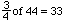
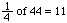

In a cross between two heterozygous individuals, the offspring would be expected to show a 3 : 1 ratio. For example, in Case 1, three-fourths of the individuals would have red (wild-type) eyes, and one-fourth would have sepia eyes.
If there are 44 offspring, how many are expected to have red eyes?
We expect three-fourths to have red eyes.

If there are 44 offspring, how many are expected to have sepia eyes?

Now you are ready to calculate chi-square.
 Return to Chi-Square Analysis of Data.
Return to Chi-Square Analysis of Data.